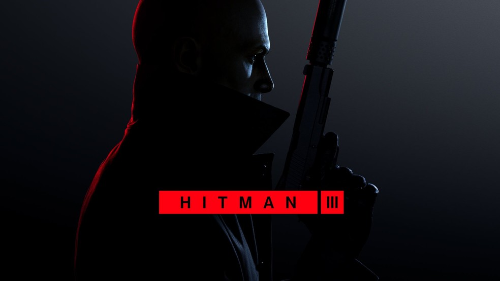
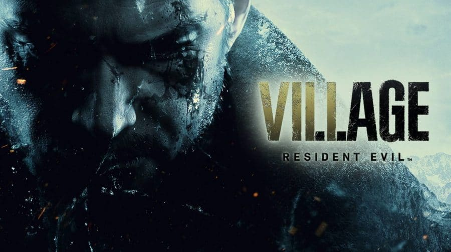
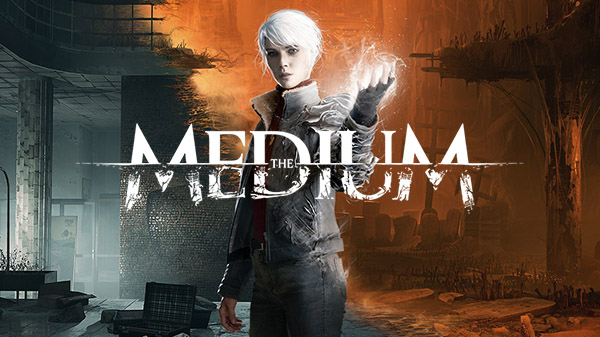

Halo Infinite

Halo Infinite é um futuro jogo eletrônico de tiro em primeira pessoa desenvolvido pela 343 Industries e publicado pela Xbox Game Studios, para as plataformas Microsoft; será lançado para o Xbox One, Windows 10 e Xbox Series X|S.
Site Halo Infinite
Hitman 3

Hitman 3 é um jogo eletrônico de furtivo desenvolvido e publicado pela IO Interactive. É o oitavo título principal da série Hitman, o terceiro e último da trilogia World of Assassination, e foi lançado em 20 de janeiro 2021
Site Hitman 3
Resident Evil Village

Resident Evil Village, conhecido no Japão como Biohazard: Village, é um futuro jogo eletrônico de survival horror desenvolvido e publicado pela Capcom. Ele foi anunciado pela primeira vez no evento de revelação do PlayStation 5 em 11 de junho de 2020.
Site Resident Evil Village
The Medium

The Medium é um jogo eletrônico de survival horror desenvolvido pela Bloober Team exclusivamente para Xbox Series X/S e Windows 10. The Medium está disponível no serviço de assinatura Xbox Game Pass, da Microsoft, desde o dia de seu lançamento em 28 de janeiro de 2021.
Site The Medium